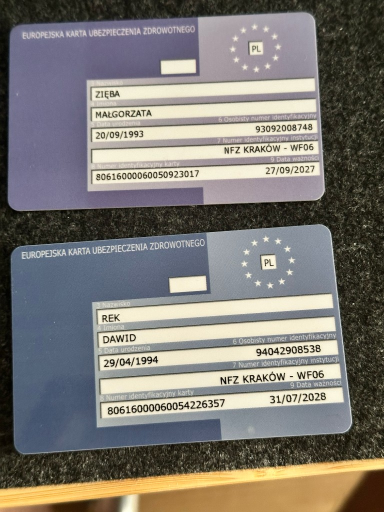

Start
Bagaże
WYCIĄGNIJ NA TAŚMĘ:
Odhaczaj wyciągnięte rzeczy poniżej.
Tymczasowa — bez przypisanego bagażu. = przy sobie · − / + = ilość sztuk. v12
Harmonogram
Baza
Kontakt z gospodarzem (WhatsApp)Gdzie jesteśmy?
Wybierz siebie, włącz udostępnianie — druga osoba zobaczy Cię na mapie i dojedzie nawigacją.
Strefy na mapie
Przystanki, atrakcje, tanie sklepy (Lidl, Eurospin, Penny) + tipy od Dario dla każdej strefy.
Strefa mapy
Przesuwaj i przybliżaj. Kliknij pinezkę albo punkt z listy poniżej.
Kliknij mapę w wybranym miejscu
Kliknij mapę — tu jest restauracja / gelato
Transport & Bilety
PUŁAPKA: Pociągi do Matery!
Pociągi FAL do Matery NIE ODJEŻDŻAJĄ z głównych peronów Trenitalii. Mają osobny budynek po lewej stronie placu Piazza Aldo Moro! Bilety kupujesz u nich w kasie.
Złote Zasady Kasowania
- Bilet z Lotniska (Automat): Skanujesz kod QR na bramkach żeby wejść. NIE trzeba kasować w maszynce.
- Trenitalia (Bilet Papierowy): Zawsze kasuj w zielonej/żółtej maszynce PRZED wejściem na peron!
- Trenitalia (Aplikacja/WWW): Musisz kliknąć przycisk "Check-in" w telefonie zanim pociąg ruszy!
- MUVT (Autobus): Zarejestruj się i dodaj kartę ZANIM wsiądziesz!
Autobus z apartamentu
Via Trevisani 236 → Bari Centrale
Najlepiej ~3 min pieszo do Q. Sella-Crisanzio (linie 03, 16, 19, 53…). Przy domu (Crisanzio-Trevisani, 2 min) tylko linia 07 — nie jedzie na Centrale, tylko w stronę Dep. Amtab.
Następne na Bari Centrale (Q. Sella)
Tapnij przycisk apki pod odjazdem — otworzy MUVT, Moovit lub Maps.
Własne notatki (MUVT)
Via Trevisani ↔ Centrum — wpisz numery linii
Bilety QR (pociąg / lot)
Zdjęcie kasownika / bramki
Zdjęcia przystanków
Narzędzia
Kurs: ładowanie...
Dawid — zostało
— €
Wydano: 0.00 €
Gosia — zostało
— €
Wydano: 0.00 €
Obecny Bilans
Jesteście na zero
Łącznie wydano: 0.00 €
Wasza lista lokali odkrytych w trakcie wyjazdu. Po dodaniu nazwy apka od razu ustawia pinezkę (GPS, a jak nie zadziała — klik na mapie). Tipy od Dario są osobno (zielone).
EKUZ — Dawid
80616000060054226357
Ważna do 31.07.2028
EKUZ — Gosia
80616000060050923017
Ważna do 27.09.2027

Dziennik
Przemyślenia, wrażenia i notatki z podróży — widoczne na obu telefonach.